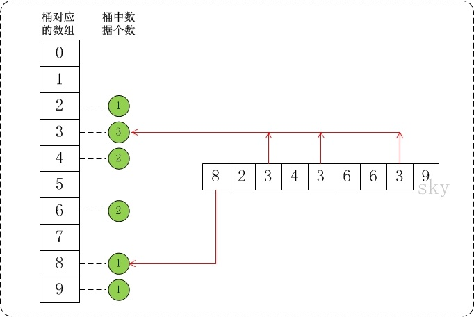

桶排序
总结：
需要知道最大值，跟数组下标结合起来。对每个桶内部使用插入排序
算法思想：
将数组分到有限数量的桶子里。假设待排序的数组 a 中共有 n 个整数，并且已知数组 a 中数据的范围 [0, max)。在桶排序时，创建容量为 max 的桶数组 r，并将桶数组元素都初始化为 0；将容量为 max 的桶数组中的每一个单元都看作一个"桶"。
在排序时，逐个遍历数组 a，将数组 a 的值作为 “ 桶数组 r ” 的下标。当 a 中数据被读取时，就将桶的值加 1。例如，读取到数组 a[3]=5，则将 r[5] 的值 +1。
复杂度：
n 个待排数据，m 个桶，平均每个桶 n/m 个数据的桶排序平均时间复杂度为：O(n) + O(m * (n/m) * log(n/m)) = O(n + n * (logn - logm)) = O(n + n * (logn - logm))，当 n=m 时，即极限情况下每个桶只有一个数据时。桶排序的最好效率能够达到 O(n)。当然最坏的情况是只有 1 只桶，那应避免这种情况。空间复杂度为：O(n+m)。对于同样的 n，桶数量 m 越大，其时间效率越高，但相应的空间开销也会越大
指定 n 个桶：
void bucket_sort(int *arr, int len)
{
const int num = 3;
std::vector<int> buckets[num]; //每个桶
// 获取最大最小值
int min = arr[0], max = arr[0];
for (int i = 0; i < len; i++)
{
if (min > arr[i]) min = arr[i];
if (max < arr[i]) max = arr[i];
}
// 一个桶的存储大小
const int interval = (max - min) / num + 1;
// 将值填充到桶中
for (int i = 0; i < len; i++)
buckets[(arr[i] - min) / interval].push_back(arr[i]);
// 对每个桶内部进行排序
for (int i = 0; i < num; i++)
{
if (!buckets[i].empty())
{
std::sort(buckets[i].begin(), buckets[i].end());
}
}
int index = 0;
for (int i = 0; i < num; i++)
{
if (!buckets[i].empty())
{
for (int j = 0; j < buckets[i].size(); j++)
{
arr[index++] = buckets[i][j];
}
}
}
}
特殊的桶排序：
void bucket_sort(int *a, int n, int max)
{
int i, j;
int *buckets;
if (a == NULL || n < 1 || max < 1)
return;
// 创建一个容量为max的数组buckets，并且将buckets中的所有数据都初始化为0。
if ((buckets = (int *)malloc(max * sizeof(int))) == NULL)
return;
std::memset(buckets, 0, max * sizeof(int));
// 1. 计数
for (i = 0; i < n; i++)
buckets[a[i]]++;
// 2. 排序
for (i = 0, j = 0; i < max; i++)
while ((buckets[i]--) > 0)
a[j++] = i;
free(buckets);
}假设 a={8,2,3,4,3,6,6,3,9}，max=10。此时将数组 a 的所有数据都放到需要为 0-9 的桶中。如下图：

也可以不用创建 max，比如说分为 3 个桶，各自的范围为：[0, max/3)，[max/3, 2*max/3)，[2*max/3, max]